Материалы
Что вас ждёт внутри
После подписки открывается весь архив, а каждый месяц добавляются новые тексты, гайды и выпуск подкаста. Вот часть того, что уже вышло.
В Telegram
Карточки для сапфических свиданий
Больше 140 вопросов о сексе, телесности, ценностях, отношениях, работе, мечтах и обо всём, что помогает узнать друг друга лучше. Их можно открыть на свидании, с подругой или с партнёркой, когда хочется поговорить о важном.
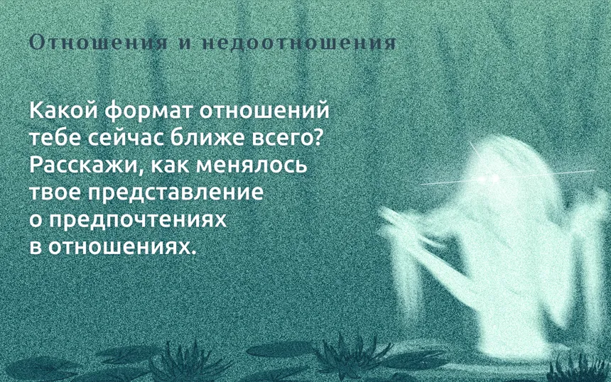
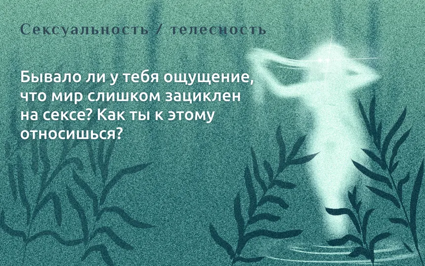
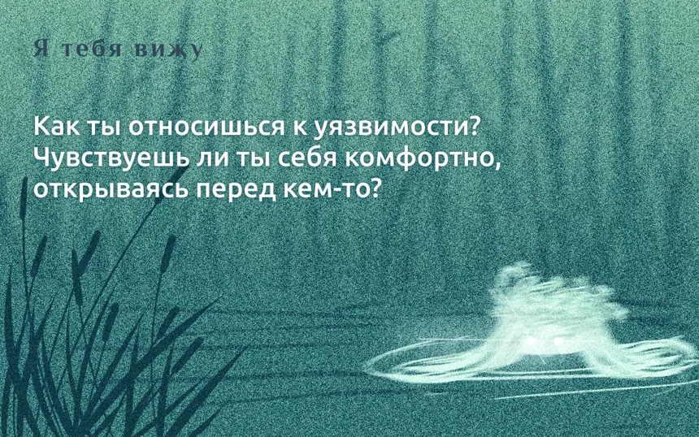
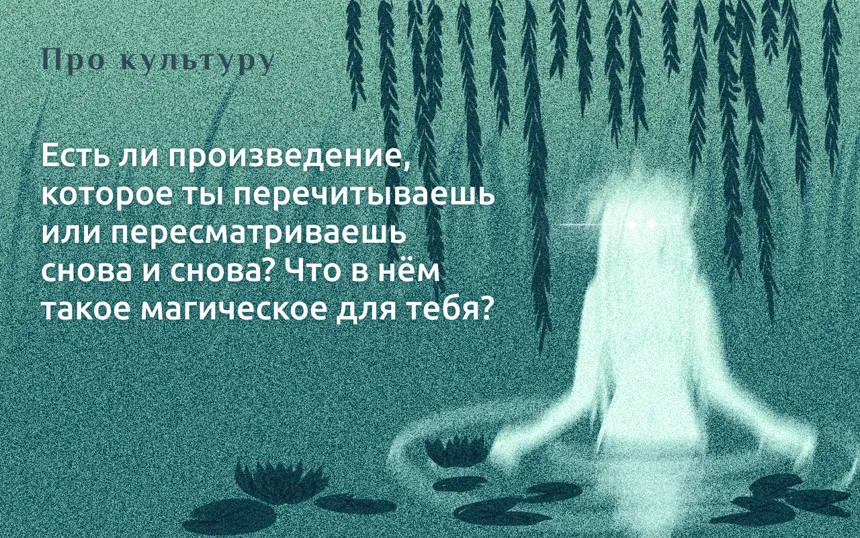
Подкаст и аудиолекции
Подкаст «Лес рук», уже 23 выпуска
Ведёт Лена Догадина. Выпуски о флирте, свиданиях, полиамории, родительстве, феминности и маскулинности, быте и жизни за городом, а ещё разговоры с Ольгертой Харитоновой о советском и постсоветском опыте. Есть и аудиолекции Тани Калининой, например «Анархия отношений: альтернативный подход к близости» и «Квир-женщины в истории России». Всё это удобно слушать в дороге.
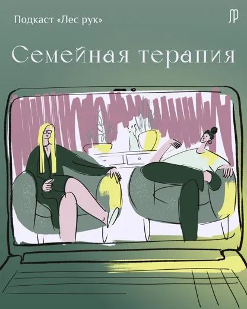
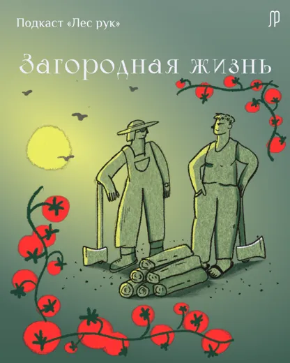
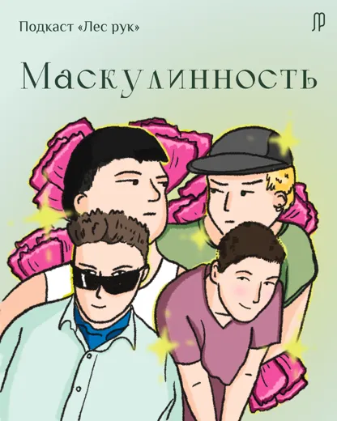
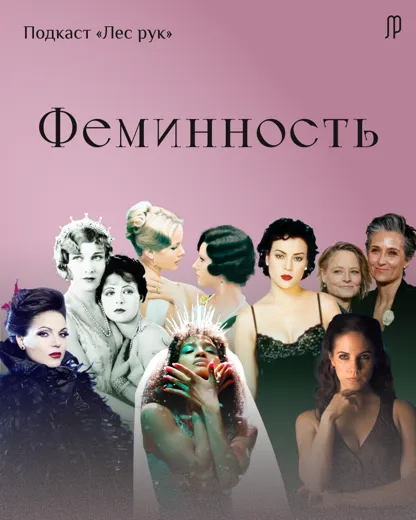
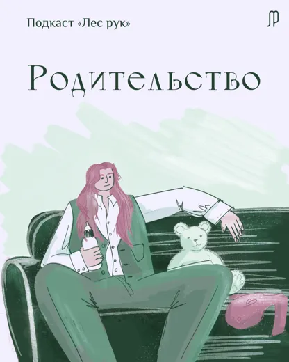
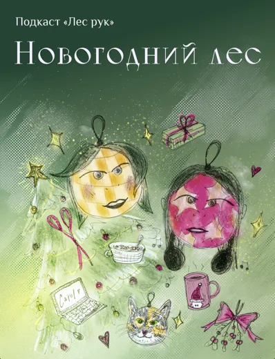
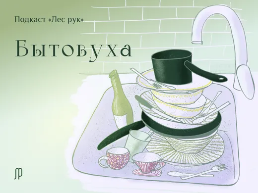
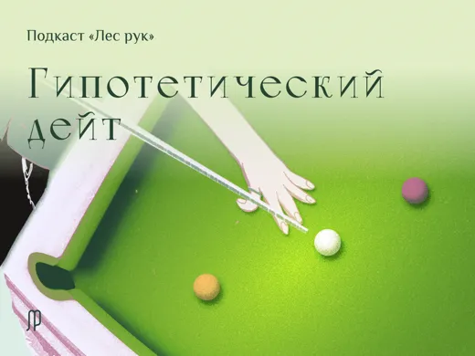
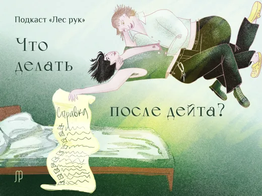
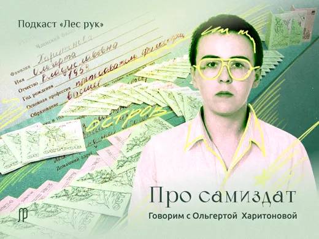
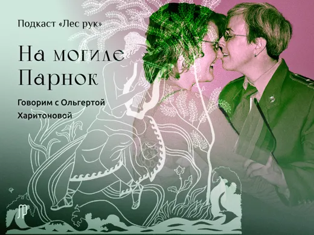
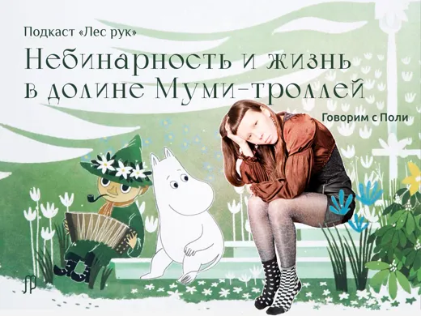
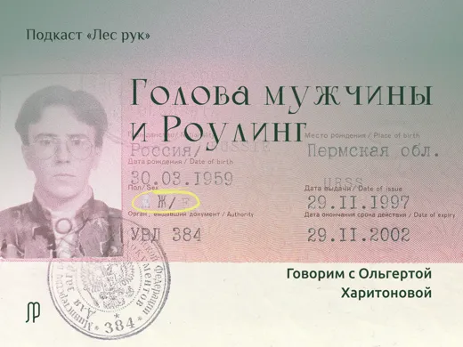
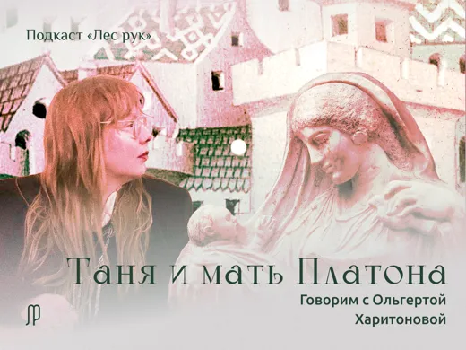
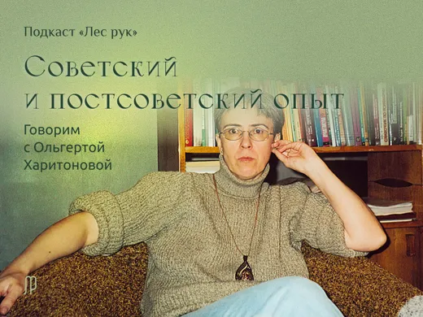
ПереводКак женщины сбежали в лес от патриархата
История феминистских коммун в Австралии.
ГайдГайд по кунилингусу
Анатомия, техники, согласие и барьерная защита. Для начинающих и опытных.
ПрозаДевчонка из Бруклина и её садовые тропинки
Текст, после которого хочется жить и выращивать горох.
СтатьяЭмоциональное слияние
Первое свидание длиной в неделю и общий Netflix к третьему дню. Откуда стереотип и что говорят исследования.
Перевод«Зрелище» российского феминизма
Перевод о том, кого из российских феминисток замечает Запад и почему.
СтатьяРодительское выгорание
Каково быть мамой в квир-семье, когда права не защищены, а поддержки мало.
ГайдГайд по страпонам
С иллюстрациями, подборкой моделей и ссылками на проверенные ресурсы.
ГайдПравила хорошего секса
Секс-анкета, которую авторка составила для подруг в 12 лет, и пять историй о том, как менялось отношение к сексу.
ЭссеПрелести и метаморфозы соло-секса
Личная история и разговор о мастурбации.
ЭссеВолосы на теле
Аури о волосах на теле, своих и чужих.
СтатьяПостельная смерть: миф или реальность?
Правда ли, что в долгих отношениях между женщинами секса становится меньше.
СтатьяАвторки насилия в сапфических отношениях
Продолжение разговора об абьюзе в парах.
ИсторииСамый запоминающийся секс
Женщины рассказали о своём самом-самом сексе. Все истории анонимные.
ПереводИх назовут соседками
Две женщины десятилетиями жили вместе и похоронены в одной могиле «в знак дорогой и преданной дружбы». О директрисах женских колледжей 1880–1960 годов.
ПереводПределы видимости
Кого из нас показывают западные сериалы и фильмы, а кого стирают. Две части от исследовательницы Кэрол Рынкевич.
СтатьяСимволическое сопротивление
О тихих способах оставаться собой там, где открыто выражать несогласие опасно.
СтатьяКогда мы не были женщинами
О философке Монике Виттиг и её знаменитом тезисе, который до сих пор понимают по-разному.
ПереводFemme-вопрос
Эссе 1992 года от фем-персоны, которую постоянно принимают за гетеро.
СтатьяМаск или фем?
Как женщины выражают феминность и маскулинность и чем это отличается от гетеромира.
ПереводКорни бифобии
Перевод эссе из сборника «Closer to Home: Bisexuality & Feminism».
ПереводМожно ли быть феминисткой и не быть лесной
Мэрилин Фрай о том, что слово «дева» когда-то означало свободную женщину, никому не принадлежащую.
ПереводИнтерсекциональный антифеминизм
Кто такие эти белые феминистки?
ОбсуждениеЯ — ваша сестра
Обсуждаем текст Одри Лорд.
СтатьяНейроотличия и женщины
Отвечаем на вопросы о связи нейроотличности и квир-идентичности.
ЭссеЭффект Золофта
Эссе писательницы и исследовательницы Арины Б.
ЭссеШестой год в окружении
Авторки предлагают новые слова, чтобы говорить о сексе.
ПрозаКвир-картошка
Рассказ Хани Рогачёвской о фестивале, который из-за цензуры притворяется праздником сельского хозяйства.
ПрозаCome closer, burn bright
Рассказ Лилии Шурыгиной о влюблённости, драме и театре.
ПрозаЧитай между строк
Фрагмент из книги Тони Лашден «На углу Незалежнасці».